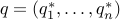
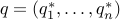

Near-Optimal Depth-Constrained Codes
IEEE Transactions on Information Theory, 50(12):3294-3298, December 2004.
Precursor,
Near-Optimal Routing Lookups with Bounded Worst Case Performance,
appeared in Proceedings IEEE INFOCOM,
3:1184-1192, Tel Aviv, March 2000.
This note considers an  -letter alphabet in which the th letter
is accessed with probability .
The problem is to design efficient algorithm for constructing near-optimal,
depth-constrained Huffman and alphabetic codes.
We recast the problem as one of determining a probability
vector  in an appropriate convex set ,
so as to minimize the relative entropy over all .
Methods from convex optimization give
an explicit solution for in terms of .
We show that the Huffman and alphabetic codes so constructed are within 1 and 2
bits of the corresponding optimal depth-constrained codes.
-letter alphabet in which the th letter
is accessed with probability .
The problem is to design efficient algorithm for constructing near-optimal,
depth-constrained Huffman and alphabetic codes.
We recast the problem as one of determining a probability
vector  in an appropriate convex set ,
so as to minimize the relative entropy over all .
Methods from convex optimization give
an explicit solution for in terms of .
We show that the Huffman and alphabetic codes so constructed are within 1 and 2
bits of the corresponding optimal depth-constrained codes.